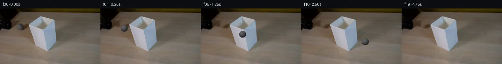
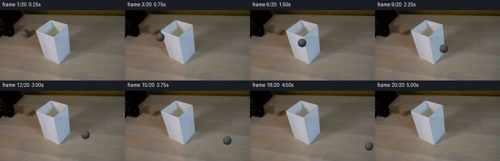
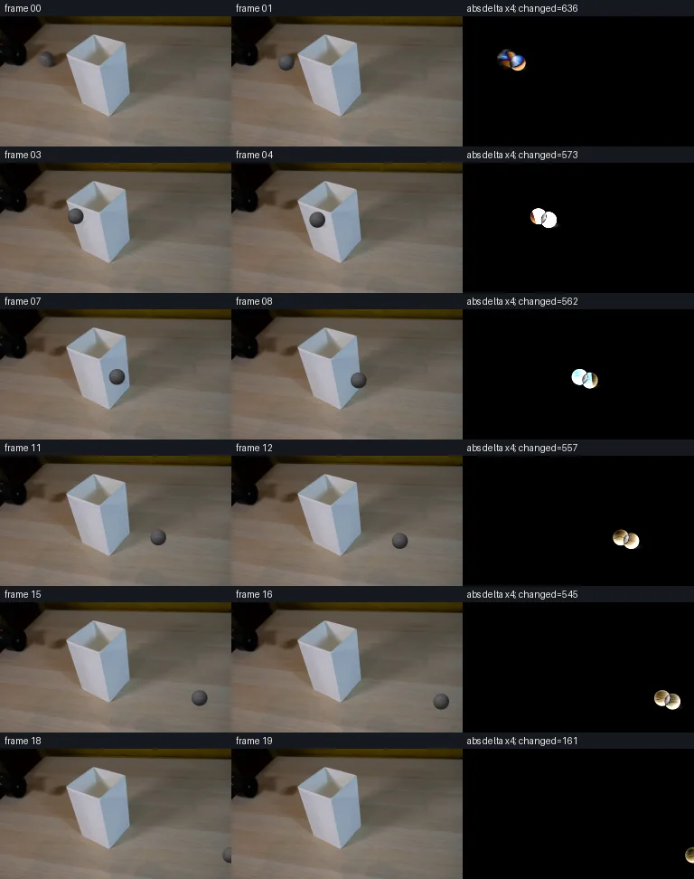

V0 · 初版 · 最终提交
![]()
Observable Generation Trace
把最终像素视频、Harness 冻结的每轮候选、真实工具事件和 Agent 自述放在同一页。可观测证据与模型自述分开标记，避免把“模型说它检查过”误当成真实工具调用。
![首帧]()
Static locked-off single-shot with fixed frame throughout filmed with constant framerate in real-time. The scene shows a realistic scientific demonstration. The scene only contains the described setup and actions. A small white lampshade is on a light wooden table and a black tube points from the left side to the right side. The grey tennis ball rolls from the left straight out of the black tube over the entire table.
首帧显示在左侧播放器初始画面。Track 权限、隔离和 tensor 一致性来自 run manifest，而不是 METHOD.md。
默认勾选初版和最终版；可选其他版本一起同步播放。仅检查图更新的连续重复快照已合并，回退旧视频仍保留为一次修订。
Observable events
来源：events.jsonl + run manifest
此 Track 禁止读取输出图片。逐轮预览由外部 Harness 自动冻结，只用于事后审计，生成 Agent 当时看不到这些页面。
Frozen candidates
每张图来自该 round 的真实 00 / 01 / 05 / 10 / 19 帧

pixels 52c65185af2c99b7 · code f128485071af0172
--- previous/generate.py +++ current/generate.py @@ -0,0 +1,187 @@ +#!/usr/bin/env python3 +"""Generate the 20-frame PixelWorld continuation using local pixel operations.""" + +from pathlib import Path + +import cv2 +import numpy as np +from PIL import Image, ImageDraw + +import artifact_io + + +ROOT = Path(__file__).resolve().parent +W, H = 256, 144 +N_FRAMES = 20 +BALL_RADIUS = 8.7 +START = np.array([49.0, 47.0], dtype=np.float32) +END = np.array([266.0, 121.0], dtype=np.float32) +DELTA = (END - START) / (N_FRAMES - 1) +TRAVEL = float(np.linalg.norm(DELTA)) +ROLL_AXIS = np.array([-DELTA[1], DELTA[0], 0.0], dtype=np.float32) +ROLL_AXIS /= np.linalg.norm(ROLL_AXIS) + + +def make_clean_plate(source: np.ndarray) -> np.ndarray: + """Locally remove the source ball and its small down-right shadow.""" + mask = np.zeros((H, W), dtype=np.uint8) + cv2.circle(mask, (49, 47), 10, 255, -1, lineType=cv2.LINE_AA) + cv2.ellipse(mask, (55, 51), (10, 7), 0, 0, 360, 255, -1, lineType=cv2.LINE_AA) + + # TELEA is restricted to this 459-pixel footprint and reconstructs the + # surrounding warm wood from immediately adjacent samples. + plate = cv2.inpaint(source, mask, 3.0, cv2.INPAINT_TELEA) + return plate + + +def rodrigues(points: np.ndarray, axis: np.ndarray, angle: float) -> np.ndarray: + """Rotate (...,3) points around a unit axis.""" + c, s = np.cos(angle), np.sin(angle) + return ( + points * c + + np.cross(axis, points) * s + + axis * np.sum(points * axis, axis=-1, keepdims=True) * (1.0 - c) + ) + + +def add_contact_shadow(frame: np.ndarray, center: np.ndarray) -> np.ndarray: + """Composite a soft, compact tabletop contact shadow.""" + cx, cy = map(float, center) + yy, xx = np.mgrid[0:H, 0:W].astype(np.float32) + # The ball moves down-right, while illumination in the source is upper-left. + sx, sy = cx + 2.8, cy + 6.0 + q = ((xx - sx) / 9.5) ** 2 + ((yy - sy) / 3.5) ** 2 + alpha = np.exp(-2.4 * q) * 0.24 + alpha[q > 3.0] = 0.0 + out = frame.astype(np.float32) + # Neutral/very slightly cool attenuation preserves the wood grain. + shadow_tint = np.array([48.0, 46.0, 47.0], dtype=np.float32) + out = out * (1.0 - alpha[..., None]) + shadow_tint * alpha[..., None] + return out + + +def add_ball(frame: np.ndarray, center: np.ndarray, roll_angle: float) -> np.ndarray: + """Render an antialiased gray fuzzy tennis ball under fixed scene light.""" + cx, cy = map(float, center) + pad = int(np.ceil(BALL_RADIUS + 2.0)) + x0, x1 = max(0, int(np.floor(cx)) - pad), min(W, int(np.floor(cx)) + pad + 1) + y0, y1 = max(0, int(np.floor(cy)) - pad), min(H, int(np.floor(cy)) + pad + 1) + if x0 >= x1 or y0 >= y1: + return frame + + yy, xx = np.mgrid[y0:y1, x0:x1].astype(np.float32) + u = (xx - cx) / BALL_RADIUS + v = (yy - cy) / BALL_RADIUS + rho2 = u * u + v * v + dist = np.sqrt(rho2) * BALL_RADIUS + alpha = np.clip(BALL_RADIUS + 0.55 - dist, 0.0, 1.0) + + z = np.sqrt(np.maximum(0.0, 1.0 - rho2)) + normal = np.stack([u, v, z], axis=-1) + normal /= np.maximum(np.linalg.norm(normal, axis=-1, keepdims=True), 1e-6) + + # Fixed upper-left lighting: highlights do not rotate with the material. + light = np.array([-0.47, -0.62, 0.76], dtype=np.float32) + light /= np.linalg.norm(light) + diffuse = np.maximum(0.0, np.sum(normal * light, axis=-1)) + shade = 0.43 + 0.59 * diffuse … diff truncated; 100 more lines …
Final visual checks
Harness 保存的最终产物


Agent claims
以下文字由生成 Agent 撰写，不等同于工具证据
uint8, 256 x 144. Channel mean is approximately (106.8, 98.7, 89.2).(115–135, 100–125, 90–115), with natural spatial variation retained from the source.x=0–45, y=0–55; its right end points into the tabletop.x=40–58, y=39–56, centered near (49,47), radius about 9 px. It has a light upper-left face and a dark lower-right contact/shadow region.x=73–141, y=20–110. The strongest white body is in its upper part; a blue-gray taper toward (121,110) is consistent with its tabletop cast shadow. The ball can therefore pass in front of/across the shadow without moving the shade.first_frame.png.(49,47) toward (266,121). This is a down-right projection of its path across the tabletop.angle = distance/radius). A soft contact shadow remains offset down-right.| Frame | Time | Planned ball center / event |
|---|---|---|
| 00 | 0.00 s | Exact source; ball at about (49,47) outside tube |
| 01 | 0.25 s | (60,51), clears the tube |
| 02 | 0.50 s | (72,55), approaches shade/shadow region |
| 03 | 0.75 s | (83,59), rolls across near edge of cast shadow |
| 04 | 1.00 s | (95,63) |
| 05 | 1.25 s | (106,66) |
| 06 | 1.50 s | (118,70), in front of shade's cast shadow |
| 07 | 1.75 s | (129,74) |
| 08 | 2.00 s | (140,78), clears central setup |
| 09 | 2.25 s | (152,82) |
| 10 | 2.50 s | (163,86) |
| 11 | 2.75 s | (175,90) |
| 12 | 3.00 s | (186,94) |
| 13 | 3.25 s | (197,97) |
| 14 | 3.50 s | (209,101) |
| 15 | 3.75 s | (220,105) |
| 16 | 4.00 s | (232,109) |
| 17 | 4.25 s | (243,113) |
| 18 | 4.50 s | (255,117), centered on right edge |
| 19 | 4.75 s | (266,121), fully exits right |
This sequence was made entirely with deterministic local Python pixel operations (Pillow, NumPy, and OpenCV). The only scene inputs were first_frame.png and prompt.txt. I did not use the network, external media, an external renderer, an AI image/video model, another case, or a subagent.
I inspected first_frame.png numerically as RGB arrays: row/column samples, quantized color counts, thresholded connected components, gradients, and local coordinate samples. I did not use an image Read/View tool and therefore do not claim a visual review. Those measurements and the frame-by-frame plan are recorded in OBSERVATION.md.
Frame 00 is the original RGB array without modification. For frames 01–19:
(49,47).(49,47) to (266,121). The projected speed is about 11.4 pixels per frame.distance/radius, while the scene lighting stays fixed.artifact_io.save packs each pixel as uint32 0xRRGGBB, transposes the data to (144,256,20), saves pixels.npz, writes all PNGs, creates the inspection contact sheet, and embeds the delta-coded frames in the standalone player.
(20,144,256,3) RGB uint8 before packing.frames/00.png and the in-memory frame 00 are pixel-identical to first_frame.png.pixels.npz contains pixels with shape (144,256,20) and dtype uint32.frames/00.png–frames/19.png was decoded and compared for exact equality with its generated RGB frame.x=52–72, y=42–60 in frame 01 to x=246–255, y=108–126 in frame 18; frame 19 has no remaining ball pixels.transition_check.png contains selected adjacent-frame pairs and 4x amplified absolute RGB deltas for local inspection.To reproduce all generated artifacts, run:
python generate.py